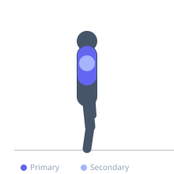

Exercise guide / Prone Y-Raise
Prone Y-Raise
The prone Y-raise is a shoulder and lower trapezius exercise performed lying face down with arms raised overhead in a Y shape. The lower trapezius is the primary target, as the upward rotation of the scapula is required to raise the arms overhead in this position. It is an important corrective exercise for improving scapular mechanics and counteracting the postural effects of prolonged sitting.
Primary muscles
trapezius lower
Secondary muscles
deltoid anterior
trapezius middle
supraspinatus
Stabilizers
infraspinatus
Equipment
No Equipment (Bodyweight)
Optional
Dumbbell (Fixed)


Starting position
- Lie face down on the floor or on an incline bench. Arms are extended alongside the head in a Y shape, with thumbs pointing up.
Setup
- No equipment required for bodyweight version. Light dumbbells (1–3 kg) can be added. An adjustable bench at a slight incline allows greater range.
Steps
- Step 1: Lie face down with arms extended forward and slightly out at a 30-45 degree angle from midline, forming a Y shape. Thumbs point toward the ceiling.
- Step 2: Keeping the elbows straight, exhale and raise both arms as high as possible while depressing the shoulder blades downward.
- Step 3: Hold at the top for 1–2 seconds, feeling the lower traps contracting.
- Step 4: Inhale and slowly lower the arms back to the floor.
Coaching cues
- Think 'shoulders down and back' as you raise the arms
- Thumbs up — this external rotation opens the shoulder impingement zone
Breathing
- Exhale on the raise; inhale on the return.
Range of motion
- Raise until the arms are as high as possible while actively depressing the shoulder blades.
Tempo
- 2-2-2-0
Common mistakes
- Shrugging the shoulders upward rather than depressing them during the raise
- Bending the elbows instead of maintaining straight arms
Safety
- Use bodyweight or minimal load — this is a corrective and postural exercise
Training
- endurance: 10–20 reps
- endurance: 3–4 sets
- Rest: {'endurance': 45}